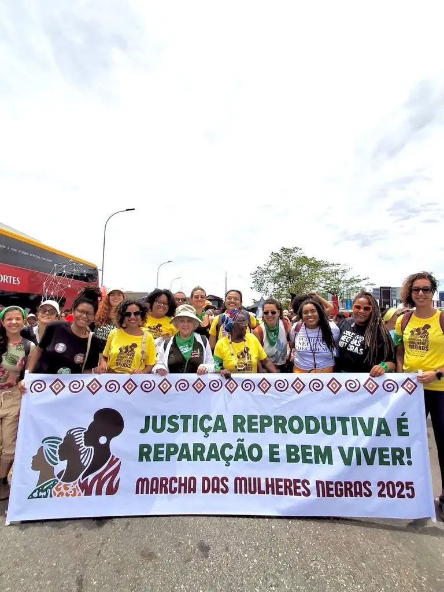
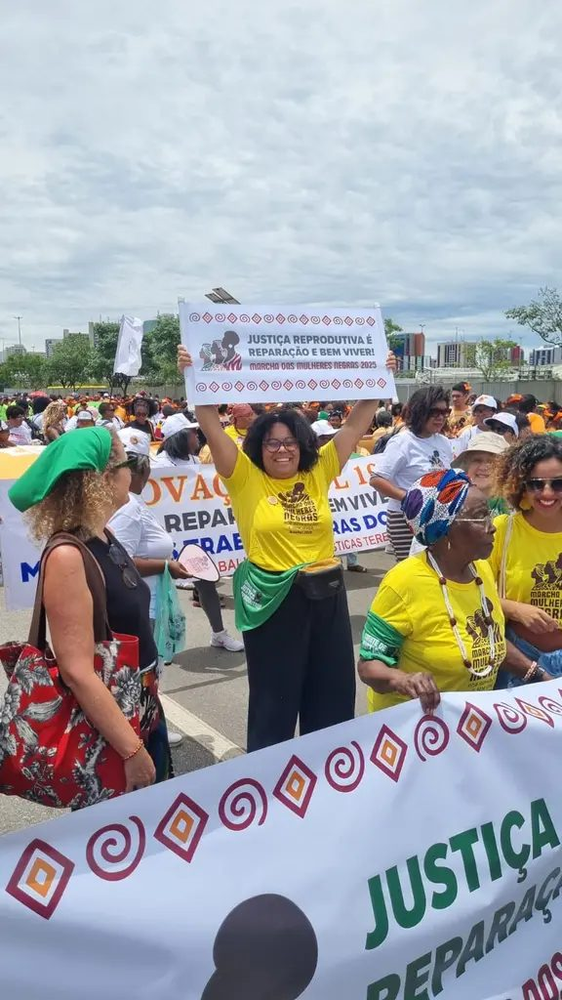
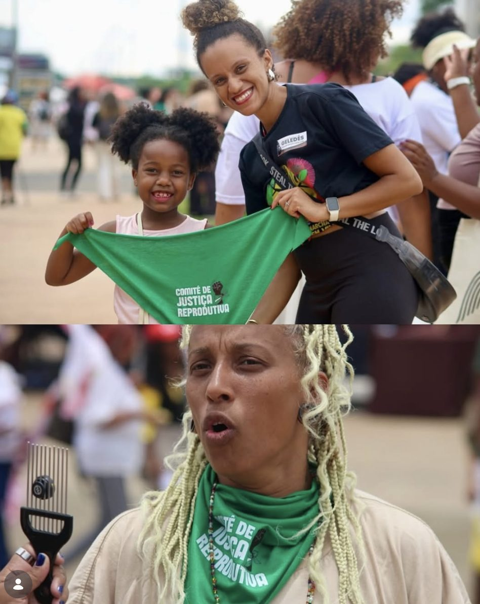
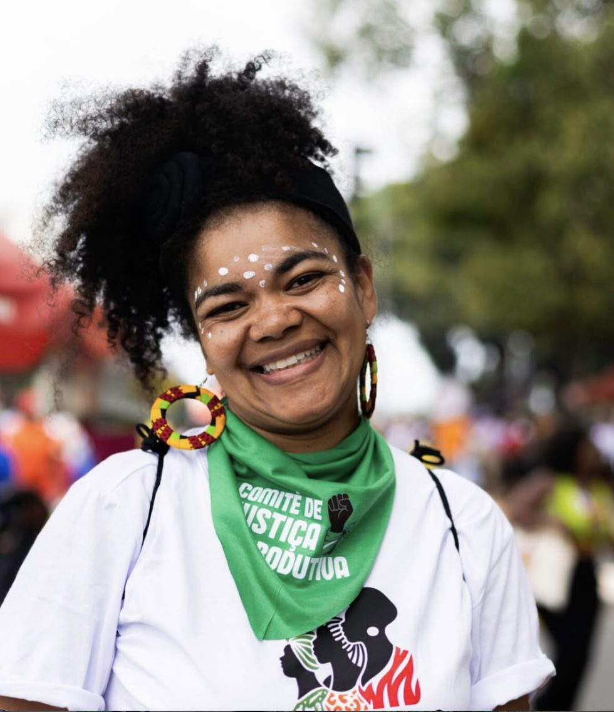
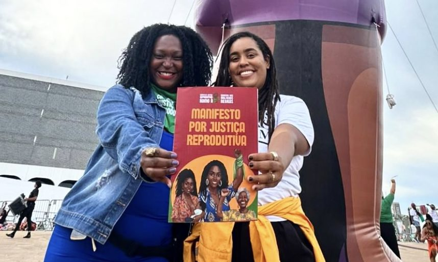

Violência obstétrica
O enfrentamento à violência e ao racismo obstétrico, que marcam a gestação, o parto e o pós-parto de mulheres negras.
Comitê de Justiça Reprodutiva · Marcha das Mulheres Negras por Reparação e Bem Viver · 2025
Agenda política das mulheres negras por justiça reprodutiva, reparação e bem viver.


A Marcha das Mulheres Negras por Reparação e Bem Viver é uma mobilização nacional que reúne mulheres negras de todo o Brasil na luta contra o racismo, o sexismo e outras desigualdades estruturais que atravessam nossas vidas e territórios de modo interseccional. Em 2025, voltamos às ruas com mais uma pauta central e urgente: a Justiça Reprodutiva, uma expressão da autonomia, da autodeterminação e da dignidade em nossa vida sexual e reprodutiva que reivindicamos há séculos.
A Justiça Reprodutiva articula direitos sexuais, direitos reprodutivos e justiça social. Inspirada nas formulações do movimento de mulheres negras norte-americanas e asiáticas (Ross, 1994; SisterSong, 2003) e nos debates latino-americanos sobre autonomia e direitos reprodutivos (Geledés, 1994), essa perspectiva parte do reconhecimento de que a decisão sobre os corpos, sobre a vida das mulheres e pessoas que gestam e sobre constituir ou não uma família depende de condições concretas de existência: renda, moradia, alimentação, saúde, tempo e segurança.
Mais do que o direito de escolher, a liberdade reprodutiva só é possível quando há plenas condições de vida com dignidade.
Essa abordagem inclui todas as pessoas afetadas pelas desigualdades reprodutivas:
Em sintonia com movimentos internacionais que defendem uma visão prazer-centrada e afirmativa da sexualidade, reafirmamos que a saúde sexual e reprodutiva deve ser vivida com prazer, cuidado e respeito, nunca sob culpa, controle ou medo.

O manifesto nasce do encontro de mais de 300 mulheres negras de todos os estados brasileiros, em reuniões e conversas, e de 250 contribuições de uma consulta pública que reuniu experiências, denúncias e caminhos de transformação para as políticas de saúde reprodutiva no Brasil. As escutas revelaram o que há muito sabemos: a violação de direitos reprodutivos é parte da estrutura de um Estado que ainda falha em garantir cuidado e reparação.
O enfrentamento à violência e ao racismo obstétrico, que marcam a gestação, o parto e o pós-parto de mulheres negras.
A descriminalização e o acesso seguro ao aborto, com informação e sem barreiras.
Insumos e infraestrutura adequados para todas as pessoas que menstruam.
Um sistema de saúde que funcione para todas as mulheres negras, livre de racismo, transfobia, etarismo e capacitismo.
Essas demandas se cruzam com desafios estruturais: o racismo institucional, a desinformação, as barreiras econômicas e territoriais, e o desmonte dos serviços públicos de saúde. No Brasil, o acesso à saúde ainda depende da renda, da cor da pele e do território, transformando a autonomia reprodutiva em privilégio, e não em direito.
Alyne Pimentel 2002
Paloma Alves de Moura 2025
Casos emblemáticos de desassistência e mortes evitáveis de mulheres negras, como os de Alyne Pimentel (2002) e Paloma Alves de Moura (2025), foram lembrados como símbolos da urgência em responsabilizar o Estado brasileiro e reconstruir as diretrizes de assistência do SUS com base na equidade racial e de gênero.
Por justiça reprodutiva, reparação e bem viver. Escolha um eixo para ver as diretrizes e as propostas ao poder público.
Um SUS antirracista, laico e acolhedor pode salvar vidas.
O racismo institucional é o eixo central das desigualdades em saúde. Ele se expressa nos corpos das mulheres negras e de todas as pessoas que gestam. No acesso negado, na dor desconsiderada, na morte evitável. As falas do mapeamento apontam para uma estrutura que decide quem pode viver com dignidade e quem será deixada à própria sorte. Quando o Estado nega cuidado, ele reafirma o pacto racial que sustenta a exclusão. Enfrentar o racismo institucional é condição para o exercício pleno da justiça reprodutiva.
O racismo institucional é uma causa direta de adoecimento, mortalidade e negação de direitos. Por isso, deve ser reconhecido e tratado como uma emergência sanitária nacional. O SUS precisa incorporar o enfrentamento do racismo em todas as suas instâncias, com metas, indicadores e orçamento definidos. Essa mudança deve estar presente nas políticas, na gestão e na cultura institucional da saúde pública.
A formação em saúde deve ser transformada para garantir práticas de cuidado baseadas na equidade, no respeito à diversidade e na eliminação de preconceitos estruturais. Profissionais preparados para reconhecer e enfrentar o racismo, a transfobia, o etarismo e o capacitismo são essenciais para a construção de um SUS realmente universal.
As violências obstétricas, o racismo da equipe de saúde, inclusive da enfermagem, mas em especial dos médicos e médicas, e as negligências que atingem mulheres negras e pessoas gestantes são violações de direitos humanos e devem ter resposta imediata do Estado. A reparação precisa ser material, simbólica e política, garantindo justiça e não repetição.
Nem sempre a escolha é realmente possível, quando o Estado nega informação e atendimento adequado.
O sofrimento psíquico entre mulheres negras e pessoas que gestam foi recorrente nas falas. O adoecimento mental é consequência direta do racismo, da sobrecarga de trabalho e da falta de redes de cuidado. O abandono estatal agrava um ciclo de exaustão coletiva. “A gente enlouquece tentando dar conta de tudo e não tem pra onde correr.” O cuidado com a saúde mental é parte da reparação.
A educação sexual e reprodutiva é um direito humano e um instrumento de autonomia. Deve ser integral, antirracista e inclusiva, articulando de maneira interseccional saúde e educação para enfrentar tabus, violências e desigualdades. O objetivo é garantir que todas as pessoas conheçam seus corpos, seus direitos e possam exercer sua sexualidade de forma livre e segura.
O acesso a métodos contraceptivos e ao aborto seguro é um direito de saúde reprodutiva e uma condição essencial para a autonomia sobre o próprio corpo por parte de mulheres e pessoas que gestam. É dever do Estado garantir que esse acesso seja universal, gratuito, informado e livre de coerções controlistas, morais, religiosas ou institucionais.
A gente vai parir com medo de morrer.
As experiências de gestação, parto e pós-parto, assim como de atendimento à saúde reprodutiva narradas no mapeamento, revelam um padrão de desumanização racializado. Mulheres negras relatam que a dor do parto é ignorada, o parto é violento e o pós-parto é marcado pelo descaso. E todos esses cenários afetam a experiência de gestar, parir e maternar. A violência obstétrica e o racismo obstétrico são a regra e não a exceção: são a expressão da política de morte que rege o sistema de saúde. Combatê-la é garantir que o nascimento seja um ato de vida, e não de sobrevivência.
A violência obstétrica é uma forma perversa de violação de direitos humanos, de misoginia, violência e racismo institucional que atinge especialmente mulheres negras, indígenas e pessoas transmasculinas. Enfrentá-la exige transformar práticas, protocolos e culturas institucionais no sistema de saúde. É necessário garantir o cuidado humanizado, respeitoso e baseado em evidências científicas durante todo o ciclo gravídico-puerperal, incluindo situações de abortamento, começando pelo pré-natal de qualidade, passando pelo trabalho de parto e parto, até o cuidado no puerpério e na amamentação, fortalecendo o protagonismo e a autonomia de quem gesta, com a verdadeira responsabilização dos serviços e profissionais envolvidos.
Os saberes tradicionais de parteiras, doulas e benzedeiras são patrimônio imaterial e base viva das práticas de cuidado comunitário. Sua valorização é essencial para o fortalecimento das redes de saúde com base na ancestralidade, na solidariedade e na autonomia dos territórios.
O parto deve ser vivido como um ato de vida, e não de sobrevivência e violências. Garantir condições humanas de parto e nascimento significa assegurar acesso a cuidados em saúde, o que inclui espaços seguros, equipes preparadas e acolhimento digno a todas as pessoas gestantes, com respeito às suas escolhas, identidades e contextos culturais.
É necessário fazer valer as políticas de acesso a absorventes e olhar para a grande desigualdade que afeta a vida, a educação de meninas que menstruam.
Os relatos sobre a falta de absorventes, banheiros e itens básicos mostram como o abandono se estende às necessidades mais básicas da vida. A pobreza menstrual, associada aos impactos do racismo ambiental e à ausência de infraestrutura sanitária adequada, falta de saneamento básico e contaminação da água, afeta a dignidade e a saúde de meninas e mulheres negras. Falar de menstruação é falar de desigualdade social, sexismo e racismo. Sem territórios saudáveis, não há bem viver possível. E sem bem viver, não há justiça social, tampouco democracia.
Assegurar que todas as pessoas que menstruam tenham acesso gratuito, contínuo e de qualidade a absorventes, coletores menstruais, calcinhas absorventes e demais produtos de higiene. A distribuição deve ocorrer em escolas, unidades básicas de saúde, prisões, abrigos, centros de atenção psicossocial e outros equipamentos públicos, garantindo dignidade e bem-estar.
Garantir a existência e manutenção de banheiros públicos limpos, seguros e acessíveis, com fornecimento regular de água, sabão, papel e lixeiras apropriadas para descarte de resíduos menstruais. Priorizar territórios onde o déficit de saneamento é mais grave, como comunidades periféricas, quilombolas, indígenas e rurais.
Inserir a dignidade menstrual como parte estruturante da educação sexual e reprodutiva, abordando a menstruação como um processo natural e político, e não como tabu ou vergonha. A formação sobre dignidade menstrual precisa ser continuada, e deve dialogar com as realidades de gênero, raça, classe e território, reconhecendo os saberes populares e tradicionais sobre o corpo e o ciclo menstrual.
São as mulheres negras que choram depois de uma chacina, são as mães negras que têm seus direitos violados.
O cuidado é o trabalho invisível que sustenta o país, sendo as mulheres negras as principais responsáveis pela realização deste trabalho. As mulheres negras cuidam de todos: da casa, das crianças, das pessoas idosas, das pessoas com deficiência, das pessoas enfermas, e quase nunca são cuidadas. As falas mostram que a maternidade é marcada pela solidão, pela falta de políticas públicas e pela sobrecarga. Reivindicar políticas de cuidado é reivindicar tempo, dignidade e direito ao descanso.
Valorizar o cuidado como parte central da economia e da vida social, reconhecendo o papel fundamental de mães solo, cuidadoras informais, mães atípicas, familiares de pessoas com deficiência, profissionais domésticas e trabalhadoras da saúde e assistência. O cuidado deve ser entendido como direito e como trabalho que sustenta a vida.
Garantir o acesso universal a escolas de educação infantil e contraturno escolar públicas e de tempo integral, inclusive em horário noturno, que atendam às necessidades das famílias trabalhadoras, em especial das mulheres negras, periféricas e mães solo. Ampliar as licenças parentais para além do modelo tradicional, contemplando diferentes arranjos familiares e promovendo a corresponsabilidade no cuidado.
Reconhecer e apoiar todas as formas de maternidade e cuidado parental, incluindo mulheres negras, indígenas, quilombolas, pessoas trans, travestis e não binárias que gestam, adotam ou criam. As políticas devem garantir acolhimento, segurança e respeito à diversidade de corpos e experiências.
O cuidado não pode acabar quando a gente envelhece.
A justiça reprodutiva não se restringe e tampouco se encerra no ciclo fértil. As mulheres negras enfrentam barreiras no início e no fim da vida, da infância à menopausa. As falas sobre o envelhecimento, a menstruação, a sexualidade, a vontade ou não de ter filhos e o acesso à educação sexual revelam a ausência de políticas públicas voltadas para as diferentes fases da vida, e propulsoras da autonomia decisória das mulheres na escolha de seus projetos de vida. Garantir atenção integral é reconhecer que a saúde reprodutiva é contínua, e não apenas vinculada à maternidade.
Promover políticas de saúde, educação e proteção social voltadas à infância e adolescência negra, com foco na construção da autoestima, do cuidado com o corpo e da autonomia das meninas e adolescentes. A infância e adolescência de pessoas negras devem ser reconhecidas como etapa decisiva para romper ciclos de violência, racismo e desigualdade.
Garantir políticas públicas específicas para mulheres negras, pessoas trans e travestis em processo de menopausa e envelhecimento, assegurando o acesso a consultas ginecológicas, terapias hormonais, acompanhamento psicológico e informação adequada. É fundamental reconhecer as desigualdades raciais e territoriais que marcam essa etapa da vida.
Desenvolver políticas e programas que assegurem o direito à saúde sexual e reprodutiva de pessoas com deficiência, garantindo autonomia, consentimento e acesso a serviços de qualidade, sem discriminação. O cuidado deve ser integral e respeitar as singularidades de cada corpo.
Nossos corpos guardam as histórias das violências que o Estado tenta apagar.
As escutas revelaram episódios de violência obstétrica, negligência e racismo médico, além de racismo promovido por outros profissionais de saúde. A ausência de memória perpetua a violência: nossos corpos guardam as histórias que o Estado tenta apagar. A justiça reprodutiva exige reparação material e simbólica, bem como o compromisso de não repetir esses abusos. Memória é política de futuro.
Instituir fundos públicos de reparação para famílias de vítimas de violência obstétrica, negligência médica e racismo institucional na saúde. As políticas devem prever indenizações, apoio psicológico, acesso à justiça e acompanhamento contínuo das famílias, garantindo que o Estado reconheça e repare as violações cometidas.
Criar e fortalecer políticas públicas de memória que visibilizem as histórias de mulheres negras e suas famílias vítimas de violências reprodutivas e estatais. A memória deve ser entendida como um instrumento de reparação simbólica e de prevenção à repetição das violações.
Assegurar a participação plena e qualificada de mulheres negras, travestis e pessoas trans nos espaços de decisão sobre políticas de saúde sexual e reprodutiva. Nenhuma política sobre nossos corpos pode ser construída sem nossas vozes, experiências e saberes.


Marchar por justiça reprodutiva é afirmar que nossas vidas importam.
Que o futuro é agora e que ele será negro, coletivo e cuidado. É reivindicar um país onde viver, gestar, amar e decidir sobre seu próprio corpo e futuro não sejam privilégios, mas direitos para todas as pessoas. Onde o Estado repare, proteja e promova a vida em todas as suas formas.
A luta pela justiça reprodutiva é, ao mesmo tempo, uma luta por infraestrutura, democracia, reparação e justiça social. Marchamos por uma política de futuro e de vida, onde o bem viver das mulheres negras seja o centro de um novo projeto de Brasil.

A construção deste manifesto é fruto do compromisso e da ação de mulheres feministas e antirracistas que lutam cotidianamente pela justiça reprodutiva das mulheres negras no Brasil. O Comitê de Justiça Reprodutiva foi impulsionado pelo Comitê Impulsor da Marcha das Mulheres Negras e coordenado pelas organizações:
Com as representantes Alane Souza, Fabiana Pinto, Juliana Santiago, Kauana Souza, Laura Molinari, Lia Manso, Luana Souza, Mariane Marçal, Mariana Barsted, Myllenne Fortunato e Naiara Leite, e as contribuições fundamentais de Emanuelle Goés, Fernanda Lopes, Lúcia Xavier e de tantas outras mulheres negras especialistas, pesquisadoras e ativistas.
Às participantes da Consulta Pública sobre Demandas em Justiça Reprodutiva de Mulheres Negras, em todos os estados do país: cada contribuição, relato e reflexão foi essencial para construir um diagnóstico vivo das urgências, desafios e potências da justiça reprodutiva nos territórios brasileiros.
Seguiremos com coragem, compromisso e cuidado, transformando as palavras de vocês em ação política.
Cada nome aqui escrito carrega uma história, um território e uma luta que se somam na construção coletiva de uma agenda nacional por justiça reprodutiva, reparação e bem viver.